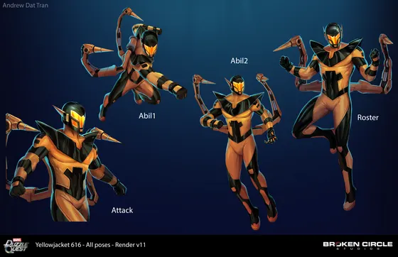
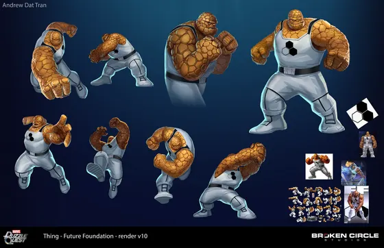

Process: from reference to final
Marvel Puzzle Quest, illustration for Broken Circle Studios, 505 Games and Marvel. Art direction: Amber Ansdell. Each character below keeps every stage I sent for review: references, sketches and pose options, clean line, color flats, render rounds, feedback and the final poses.
 Color comps for animation backgroundsPantheon and Digman!: lighting options, rough to clean
Color comps for animation backgroundsPantheon and Digman!: lighting options, rough to clean Doctor Doom (Infamous Iron Man)85 files · 4 stages
Doctor Doom (Infamous Iron Man)85 files · 4 stages Daken (Pride)54 files · 7 stages
Daken (Pride)54 files · 7 stages Cyclops (Hellfire Gala)67 files · 6 stages
Cyclops (Hellfire Gala)67 files · 6 stages Spider-Man (Hornet)60 files · 6 stages
Spider-Man (Hornet)60 files · 6 stages Prowler47 files · 6 stages
Prowler47 files · 6 stages Man-Ant43 files · 6 stages
Man-Ant43 files · 6 stages
Yellowjacket30 files · 6 stages Mantis, Rocket and Groot33 files · 5 stages
Mantis, Rocket and Groot33 files · 5 stages Spider-Man (Anti-Ock Suit)30 files · 5 stages
Spider-Man (Anti-Ock Suit)30 files · 5 stages Nightcrawler74 files · 4 stages
Nightcrawler74 files · 4 stages Namora39 files · 4 stages
Namora39 files · 4 stages Elektra77 files · 3 stages
Elektra77 files · 3 stages Monica Rambeau65 files · 3 stages
Monica Rambeau65 files · 3 stages Psylocke64 files · 3 stages
Psylocke64 files · 3 stages Silk56 files · 3 stages
Silk56 files · 3 stages Maria Hill, Baron Zemo and Thor55 files · 3 stages
Maria Hill, Baron Zemo and Thor55 files · 3 stages Wolverine (Hooded Man)50 files · 3 stages
Wolverine (Hooded Man)50 files · 3 stages Sunspot50 files · 3 stages
Sunspot50 files · 3 stages
The Thing49 files · 3 stages Yelena Belova (Thunderbolts)49 files · 3 stages
Yelena Belova (Thunderbolts)49 files · 3 stages Karolina Dean46 files · 3 stages
Karolina Dean46 files · 3 stages Moon Knight44 files · 3 stages
Moon Knight44 files · 3 stages Howard the Duck37 files · 3 stages
Howard the Duck37 files · 3 stages Spider-Ham 209932 files · 3 stages
Spider-Ham 209932 files · 3 stages Spider-Ham31 files · 3 stages
Spider-Ham31 files · 3 stages Blade (Classic)28 files · 3 stages
Blade (Classic)28 files · 3 stages Deadpool (Taco Truck)22 files · 3 stages
Deadpool (Taco Truck)22 files · 3 stages Omega Red17 files · 3 stages
Omega Red17 files · 3 stages Event and store art (Doctor Doom, S.H.I.E.L.D. Training)8 files · 2 stages
Event and store art (Doctor Doom, S.H.I.E.L.D. Training)8 files · 2 stages Drax (Classic)6 files · 2 stages
Drax (Classic)6 files · 2 stages